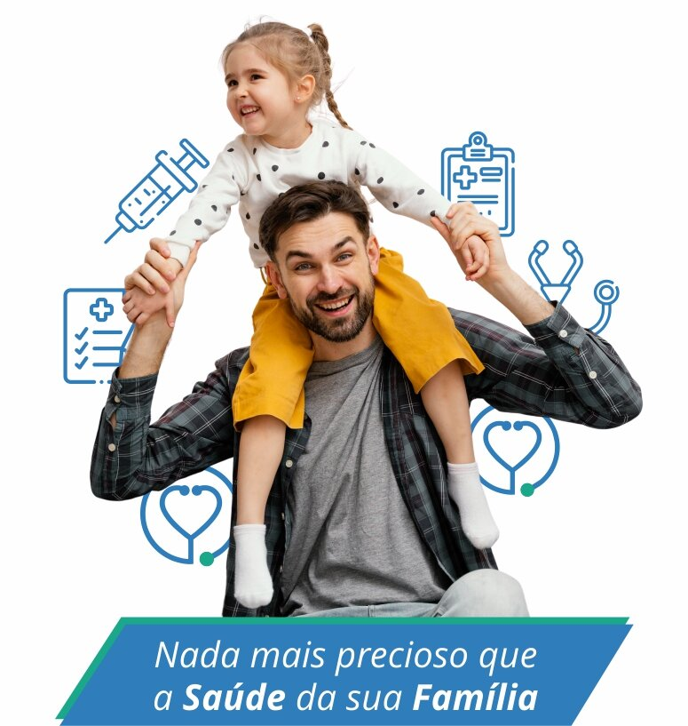

Horário de funcionamento presencial
De segunda à sexta das 8:30h às 18:00h, sábados das 8:30h às 12:30h, exceto feriados.
Especialidades para Você e sua Família
A Clinicentro trabalha com as principais especialidades médicas para cuidar da sua Saúde. Nossa equipe é composta por profissionais graduados e experientes, que garantem um atendimento de qualidade.
Clique e veja os valores abaixo:
Ponto de atendimento
Av. Borges de Medeiros 410, 5º Andar - Centro - Porto Alegre